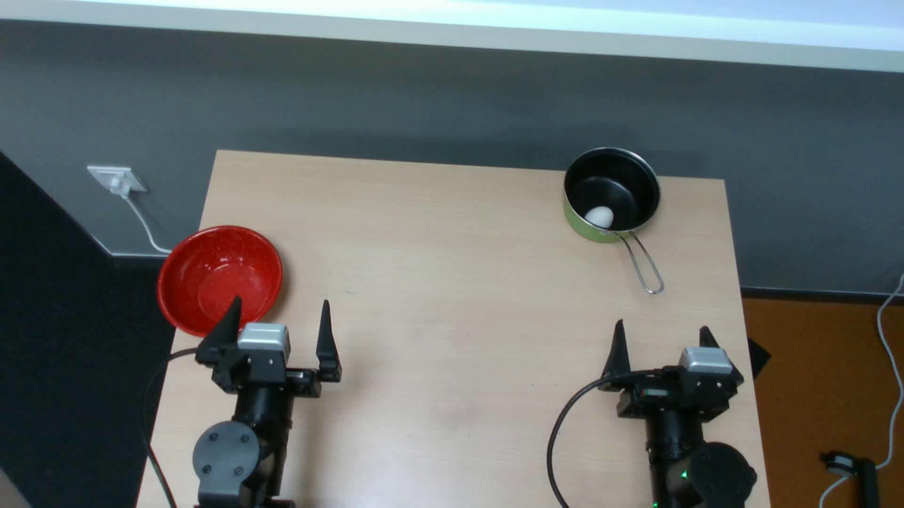
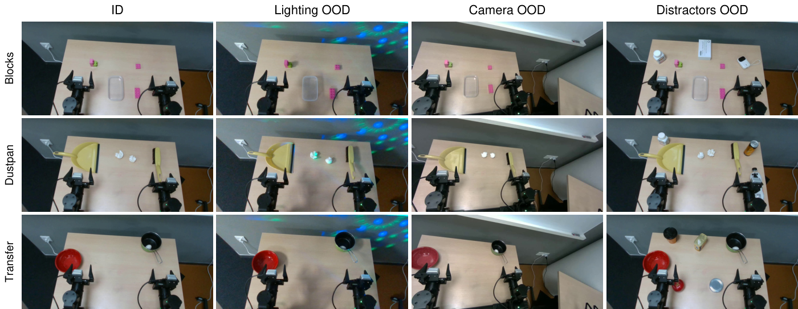
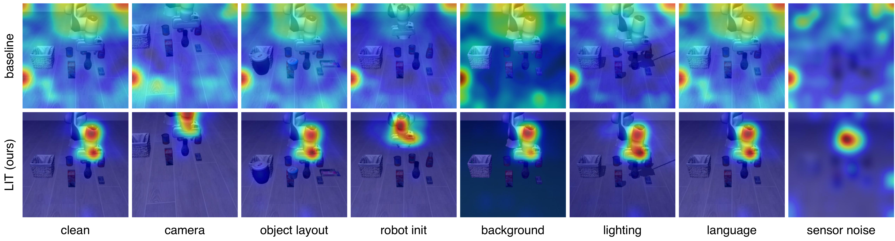

In-distribution74.7 → 88.0In one paragraph
Action experts trained on top of pretrained visual representations can learn vision–action shortcuts: they latch onto task-irrelevant visual cues that happen to correlate with the demonstrated motions, and fall apart when the scene changes. LIT removes the direct visual pathway and makes a small set of learnable latent tokens the action expert’s only route to vision. Stage 1 first learns an action prior from language, robot state and the terminal SE(3) goal with no images at all; Stage 2 then supervises the latent tokens to reconstruct that same terminal pose, so what crosses the interface is geometry rather than appearance. The recipe changes nothing else about the model. On a real robot it raises success by 13–17 percentage points under lighting, camera and distractor shifts never seen in training, and it transfers unchanged across four VLA and WAM architectures.
Read the full abstract
Robot foundation models achieve strong in-distribution performance but often degrade under visual distribution shifts. When learning to generate actions from pretrained visual representations, models may exploit task-irrelevant visual cues that correlate with demonstrated actions within the training distribution. Such vision–action shortcuts can undermine generalization when these correlations change under distribution shifts. Mitigating these shortcuts requires constraining how visual information is used for action generation while preserving task-relevant spatial information.
We propose Latent Interface Training (LIT), a framework-agnostic two-stage strategy that first establishes a spatial-goal-conditioned action prior without images, then constrains visual conditioning through a pose-supervised latent interface. Stage 1 trains the action expert to generate action chunks conditioned on language, robot state, and each demonstrated chunk’s terminal SE(3) end-effector pose, learning goal-directed action generation independently of visual cues. Stage 2 introduces a latent interface that aggregates visual and semantic representations and serves as the pretrained action expert’s only visual conditioning pathway. The interface is supervised to reconstruct the terminal pose previously used to condition Stage 1, encouraging it to retain the goal-relevant spatial information needed for action generation.
Across four vision–language–action and world–action architectures—π0.5, MolmoAct2, FAST-WAM, and ImageWAM—LIT improves overall LIBERO-Plus success by 3.88–10.71 percentage points while preserving or improving average LIBERO success. Real-world evaluations show 13.3–16.7 percentage-point gains in success aggregated across three tasks under unseen camera configurations, lighting variations, and distractors.
Motivation
The vision–action shortcut

Method
Latent Interface Training
LIT keeps the backbone and the action expert as they are and changes only the interface between them. Direct conditioning on backbone visual tokens is removed; a small set of learnable latent tokens becomes the action expert’s only visual conditioning pathway, and those tokens are supervised to reconstruct the terminal SE(3) goal. The shared spatial target thus connects action-prior learning with visual interface learning, while the exclusive interface constrains visual conditioning to mitigate vision–action shortcuts.
Stage 1 · Action prior without images
The action expert is conditioned on language and robot-state representations from a frozen pretrained backbone, together with an encoding of each demonstrated action chunk’s terminal SE(3) end-effector pose. This establishes a spatial-goal-conditioned action prior without visual inputs.
Stage 2 · Pose-supervised latent interface
Learnable latent tokens cross-attend to visual and semantic backbone representations and provide layer-wise conditioning to the pretrained action expert, serving as its only visual conditioning pathway. A pose-reconstruction objective supervises these tokens to recover the same terminal pose used in Stage 1.

Real robot
Unseen lighting, cameras and distractors
A single multi-task policy is trained on 300 demonstrations and evaluated on three manipulation tasks under the in-distribution setting and three visual shifts: changed scene illumination, a changed camera configuration (top camera only), and task-irrelevant distractor objects added to the scene. Aggregated across the three tasks:
In-distribution
74.7→88.0%
+13.3 pp
Lighting OOD
53.3→70.0%
+16.7 pp
Camera OOD
30.0→46.7%
+16.7 pp
Distractors OOD
50.0→63.3%
+13.3 pp


Simulation rollouts
What the latent interface decodes to, mapped back onto the image
Closed-loop rollouts of LIT on MolmoAct2 (Stage-2 checkpoint, 30K steps). At every control step the pose decoder reads the 8 pose-supervised latent tokens, recovers a terminal SE(3) end-effector pose, and that pose is projected back onto the rendered observation. PRED is a prediction of where the gripper should be at the end of the current action chunk (t+10), so it should lead CUR rather than track it. The right panel shows both poses in a fixed-view 3D workspace. No pose is given to the policy at inference — everything in red is inferred from vision through the interface. Clips play at half speed.
PRED — pose decoded from the latent tokens (t+10)CUR — current end-effector pose from the simulatorLine — remaining displacement
LIBERO-Plus · zero-shot out-of-distribution
The same two tasks under four perturbations the policy never saw in training. Pick a perturbation; both tasks update.
LIBERO · in-distribution
Standard LIBERO tasks, one episode each, two per suite.
Simulation benchmarks
LIBERO and LIBERO-Plus
LIT is instantiated in four architectures spanning both VLA and world–action model designs. It preserves or improves in-distribution LIBERO success, and improves zero-shot LIBERO-Plus success on every architecture.
LIBERO-Plus overall success · gain over the paired baseline
Overall is the mean over the seven perturbation families; values from Table II.
| Model | Variant | Spatial | Object | Goal | Long | Avg. |
|---|---|---|---|---|---|---|
| π0.5 VLA | Baseline | 88.60 | 93.40 | 89.20 | 79.80 | 87.75 |
| LIT | 90.20 | 98.80 | 93.40 | 84.80 | 91.80 | |
| MolmoAct2 VLA | Baseline | 93.00 | 97.80 | 95.40 | 87.80 | 93.50 |
| LIT | 94.60 | 96.20 | 95.20 | 90.40 | 94.10 | |
| FAST-WAM WAM | Baseline | 98.20 | 100.00 | 97.00 | 95.20 | 97.60 |
| LIT | 98.80 | 99.80 | 98.40 | 95.40 | 98.10 | |
| ImageWAM WAM | Baseline | 98.40 | 100.00 | 97.60 | 96.40 | 98.10 |
| LIT | 99.60 | 99.20 | 99.20 | 95.60 | 98.40 |
Table I · In-distribution success rates (%) on LIBERO. Better result in each architecture in bold.
| Perturbation | π0.5 (VLA) | MolmoAct2 (VLA) | FAST-WAM (WAM) | ImageWAM (WAM) | ||||||||
|---|---|---|---|---|---|---|---|---|---|---|---|---|
| Base | LIT | Δ | Base | LIT | Δ | Base | LIT | Δ | Base | LIT | Δ | |
| Camera Viewpoints | 58.29 | 80.30 | +22.01 | 39.40 | 48.41 | +9.01 | 16.40 | 43.83 | +27.43 | 82.16 | 84.55 | +2.39 |
| Sensor Noise | 79.89 | 91.94 | +12.05 | 49.03 | 70.77 | +21.74 | 37.70 | 56.89 | +19.19 | 96.54 | 97.57 | +1.03 |
| Lighting Conditions | 82.40 | 90.11 | +7.71 | 84.86 | 85.64 | +0.78 | 78.20 | 83.89 | +5.69 | 97.65 | 97.99 | +0.34 |
| Background Textures | 85.32 | 86.99 | +1.67 | 89.78 | 94.42 | +4.64 | 53.70 | 57.22 | +3.52 | 88.26 | 94.24 | +5.98 |
| Robot Initial States | 60.71 | 63.71 | +3.00 | 50.71 | 59.03 | +8.32 | 44.50 | 48.86 | +4.36 | 47.81 | 60.19 | +12.38 |
| Object Layout | 64.00 | 73.11 | +9.11 | 55.90 | 71.61 | +15.71 | 60.70 | 64.17 | +3.47 | 77.72 | 83.67 | +5.95 |
| Language Instructions | 52.15 | 71.50 | +19.35 | 75.69 | 73.58 | −2.11 | 68.90 | 69.55 | +0.65 | 90.97 | 90.05 | −0.92 |
| Overall | 68.97 | 79.67 | +10.70 | 63.62 | 71.92 | +8.30 | 51.44 | 60.63 | +9.19 | 83.02 | 86.89 | +3.87 |
Table II · Zero-shot success rates (%) on LIBERO-Plus. Δ: change from the paired baseline. Overall: mean over the seven perturbations. Better result in each architecture in bold.
Why it works
Behavior, learning dynamics, and design choices
Having established LIT’s generalization improvements in Table II, we examine the behavior, learning dynamics, and design choices underlying these gains. Unless otherwise specified, all analyses and ablations use MolmoAct2. We address four questions:
- Does LIT maintain attention to task-relevant regions under distribution shifts?
- Do its responses to visual and goal interventions indicate reduced reliance on vision–action shortcuts?
- Do LIT’s training dynamics support effective action-prior and visual-interface learning, helping explain its generalization gains?
- Which components contribute to LIT’s generalization gains?
Stability of action-to-image attentionUnder distribution shifts, LIT keeps looking at the task-relevant robot–object regions; the baseline’s attention drifts.
For the baseline we use direct action-to-visual attention; for LIT we compose attention from the action expert to the latent tokens with attention from the latent tokens to visual representations. Across clean and perturbed observations, baseline attention shifts across perturbations, whereas LIT’s attention remains more concentrated on task-relevant robot–object regions.

Probing vision–action shortcutsLIT is unmoved by task-irrelevant visual changes and follows a changed goal; the baseline does the opposite.
Task-preserving visual interventions: adding a distractor or blurring the image while keeping the instruction, spatial goal, and robot state fixed. The baseline trajectories deviate substantially from their clean counterparts, whereas LIT’s remain close. Goal-changing intervention: changing the instructed goal while keeping the visual scene and robot state fixed. The baseline still moves toward the original goal, consistent with reliance on unchanged visual cues; LIT instead redirects toward the new goal.

Learning dynamics across stagesEach stage learns what it is designed to learn, and LIT reaches a lower action loss than the baseline on the same 30K-step budget.
Stage 1 action loss decreases rapidly to 0.029 after 10K steps, indicating that the expert effectively learns goal-directed action generation without images. In Stage 2, pose-reconstruction loss reaches 0.003 after 20K steps, showing that the demonstrated spatial goals are recoverable from the learned interface on training data. LIT also achieves a lower action loss in 20K visual training steps than the baseline reaches in 30K steps, with both methods using the same total training budget.

Ablation
Which components contribute to the gains
We next examine how LIT’s training and conditioning designs contribute to generalization through the ablations in Table III. Every variant keeps in-distribution LIBERO success essentially unchanged; the differences are all in out-of-distribution success on LIBERO-Plus. Click a row for the evidence.
Vanilla staged training65.46−6.46 vs. LITTwo-stage training alone does not account for LIT’s gains.
An LA4VLA-inspired baseline first predicts actions from language and robot state without images, then conditions the action expert on backbone visual representations. OOD success increases from 63.62% for the MolmoAct2 baseline to 65.46%, but remains 6.46 percentage points below LIT (71.92%).
LIT w/o Stage 1 & pose supervision65.70−6.22 vs. LITA latent interface trained only through the action objective barely helps.
Learnable tokens still aggregate backbone representations to condition the action expert, as in query-based interfaces such as VLA-Adapter, but are trained solely through the action objective. OOD success reaches 65.70%, only 2.08 percentage points above the baseline and 6.22 points below LIT — the interface needs both the action prior and the spatial-goal supervision.
LIT w/o Stage 168.23−3.69 vs. LITThe action prior matters for the visual policy learned on top of it.
Skipping Stage 1 and randomly initializing the action expert, while retaining the Stage 2 latent interface and pose supervision, gives 68.23% OOD success compared with 71.92% for LIT — a 3.69-percentage-point decrease.
LIT w/o pose supervision68.86−3.06 vs. LITSpatial-goal supervision is what buys robustness to task-irrelevant visual perturbations.
Removing the Stage 2 pose-reconstruction loss while retaining all other components gives 68.86%, above the baseline’s 63.62% but 3.06 percentage points below LIT. The largest decreases occur under Sensor Noise (70.77% → 60.02%, 10.75 points) and Background Textures (94.42% → 88.38%, 6.04 points).
Baseline w/ pose supervision65.45−6.47 vs. LITPose supervision alone cannot explain the improvement.
Adding the same pose-reconstruction objective to the baseline — an MLP decoder reconstructs the terminal goal state from the baseline’s final-layer backbone features, with its original visual conditioning architecture retained — raises OOD success from 63.62% to only 65.45%, 6.47 percentage points below LIT.
LIT w/ direct visual access67.74−4.18 vs. LITThe generalization comes from the interface being the action expert’s only visual pathway.
Allowing the action expert to directly access backbone visual representations while retaining all LIT components keeps LIBERO success comparable (94.25% vs. 94.10%) but drops LIBERO-Plus success from 71.92% to 67.74% — a 4.18-percentage-point decrease.
| Variant | ID | OOD: LIBERO-Plus | |||||||
|---|---|---|---|---|---|---|---|---|---|
| LIBERO Avg. | Camera | Noise | Lighting | Backgr. | Robot | Layout | Lang. | Overall | |
| MolmoAct2 | 93.50 | 39.40 | 49.03 | 84.86 | 89.78 | 50.71 | 55.90 | 75.69 | 63.62 |
| Vanilla staged training | 93.75 | 43.28 | 52.09 | 85.17 | 88.08 | 55.16 | 60.98 | 73.46 | 65.46 |
| LIT w/o Stage 1 & pose supervision | 93.45 | 39.84 | 49.34 | 87.22 | 89.63 | 53.00 | 68.20 | 72.67 | 65.70 |
| LIT w/o Stage 1 | 93.70 | 46.15 | 54.65 | 87.13 | 86.34 | 63.10 | 66.43 | 73.80 | 68.23 |
| LIT w/o pose supervision | 93.50 | 42.78 | 60.02 | 91.07 | 88.38 | 57.81 | 68.85 | 73.11 | 68.86 |
| Baseline w/ pose supervision | 93.20 | 40.32 | 51.30 | 89.00 | 90.13 | 55.45 | 58.37 | 73.56 | 65.45 |
| LIT w/ direct visual access | 94.25 | 42.96 | 55.28 | 88.18 | 89.22 | 62.49 | 63.74 | 72.33 | 67.74 |
| LIT | 94.10 | 48.41 | 70.77 | 85.64 | 94.42 | 59.03 | 71.61 | 73.58 | 71.92 |
Table III · Ablation study of LIT on MolmoAct2. Task success rates (%) on LIBERO (ID) and LIBERO-Plus (OOD). Overall: mean across the seven OOD perturbation categories. Higher is better.
Citation
BibTeX
@article{lin2026lit,
title = {Breaking the Vision--Action Shortcut: Latent Interface Training
for Generalizable Robot Foundation Models},
author = {Lin, Jianman and Shailesh, Shailesh and Luo, Zhongyi and Duan, Jiafei},
journal = {Under review},
year = {2026}
}